📋 Tableau Récapitulatif de Tous les Entraînements (Temps Réel)
| Expérience | Architecture | Époque | Train Loss | Train Acc | Val Loss | Val Acc | Best Val Acc | Core FNR | Test Acc | Test F1 |
|---|---|---|---|---|---|---|---|---|---|---|
4obs_no_RA_clean | GAT | 2 | 0.1752 | 92.98% | 0.2404 | 90.04% | 90.04% | 8.41% (val min) | In progress | - |
clean_5obs | GAT | 20 | 0.1006 | 96.00% | 0.1495 | 94.10% | 94.21% | 6.49% (val: 6.60%) | 93.04% | 0.9035 |
clean_5obs | GCN | 25 | 0.1136 | 95.42% | 0.1820 | 92.33% | 92.33% | - | 92.17% | 0.8886 |
noisy_5obs | GAT | 20 | 0.2683 | 88.10% | 0.4221 | 81.26% | 81.76% | 19.52% (val: 14.33%) | 84.91% | 0.7879 |
4obs_no_RA_clean | GAT (In Flight) | Ep 03 (19%) | 0.1068 | - | - | - | - | - | In progress | - |
📈 Courbes d'Apprentissage Globales (Tous Modèles Superposés)
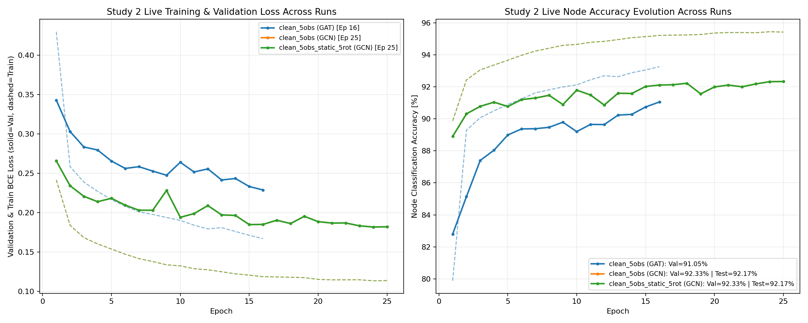
📊 Comparaison des Spectres des Valeurs Singulières en Bâtons (Candles RMT vs Bulk Marchenko–Pastur)
Chaque graphe affiche à gauche la densité spectrale empirique avec le bulk de bruit Marchenko–Pastur (zone ombrée) et les valeurs singulières qui s'en détachent (candles à tête dorée), et à droite le spectre complet classé par rang.
🔬 4obs_no_RA_clean
Spectre des Valeurs Singulières en Bâtons (Candles) vs Bulk Marchenko–Pastur
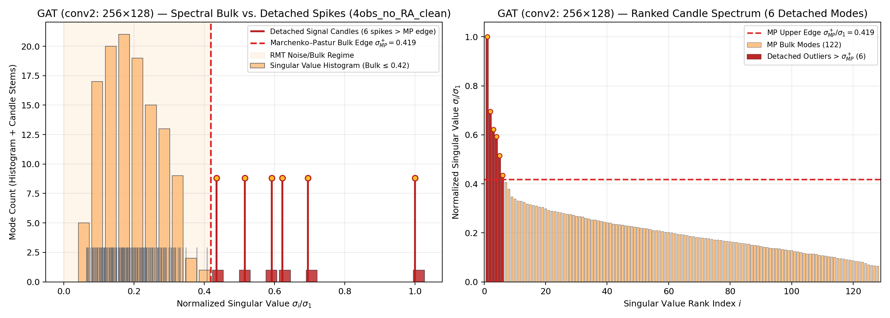
Évolution Loss & Accuracy
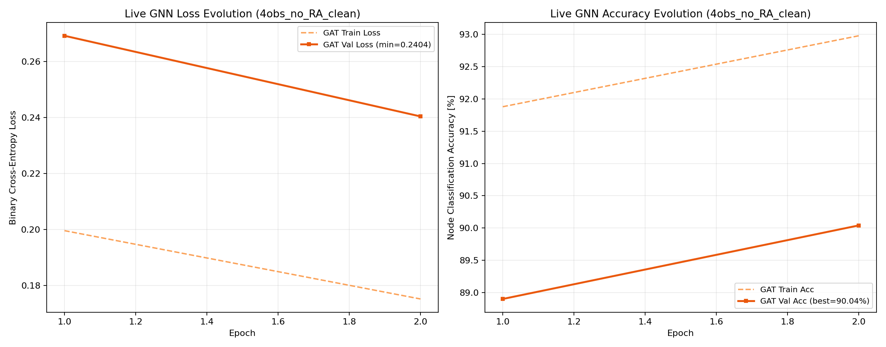
🔬 clean_5obs
Spectre des Valeurs Singulières en Bâtons (Candles) vs Bulk Marchenko–Pastur
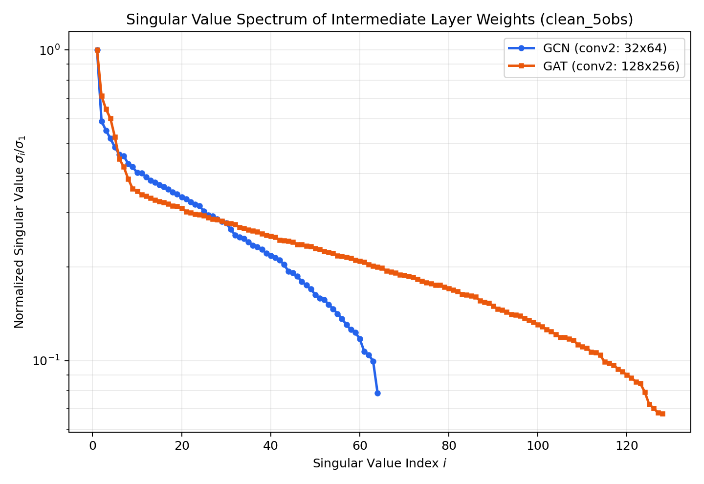
Évolution Loss & Accuracy
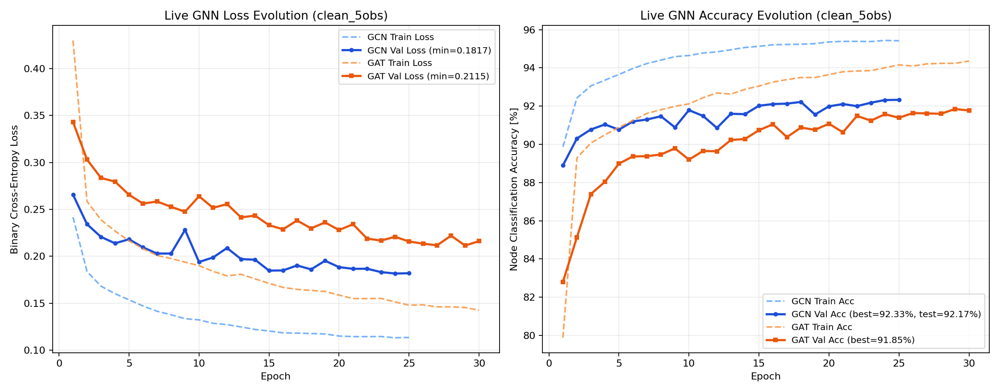
🔬 noisy_5obs
Spectre des Valeurs Singulières en Bâtons (Candles) vs Bulk Marchenko–Pastur

Évolution Loss & Accuracy

🟢 1. Baseline 5D Sans Bruit (Observables Exactes) — clean_5obs
Comparaison directe GAT (3 couches, 4 têtes, résiduel, Test Acc = 93.04%, Core FNR = 6.49%) vs GCN (Baseline isotrope, Test Acc = 92.17%).
Graphes Interactifs Plotly (Cliquer pour afficher dans le lecteur intégré ou ↗ pour plein écran)
Figures Scientifiques Haute Résolution (PNG)
🎯 Core FNR & Rappel par Péricentre R_p1 (GAT_clean_5obs)
clean_5obs/surviving_core_fnr_by_perigalacticon_GAT_clean_5obs.png
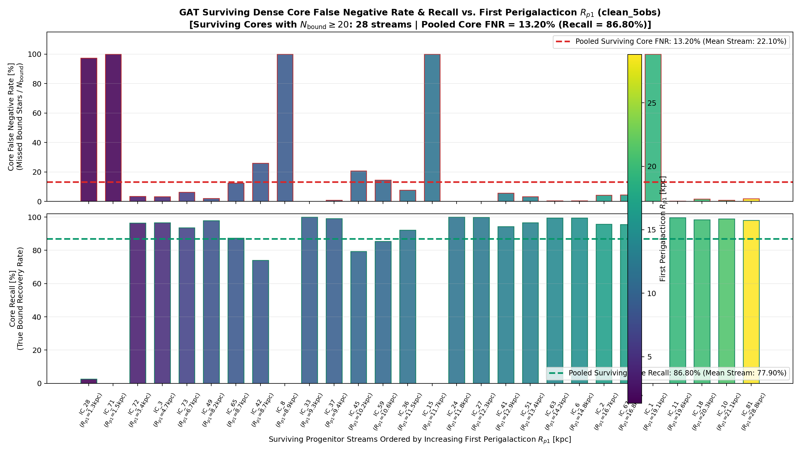
🎯 Core FNR & Rappel par Péricentre R_p1 (GCN_clean_5obs)
clean_5obs/surviving_core_fnr_by_perigalacticon_GCN_clean_5obs.png
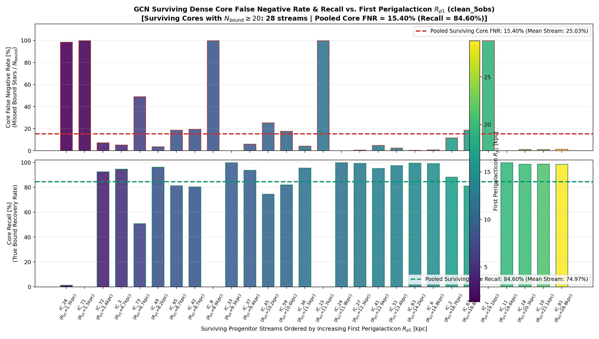
📉 Erreur de Classification par Péricentre R_p1 (GAT_clean_5obs)
clean_5obs/error_percentage_by_perigalacticon_GAT_clean_5obs.png
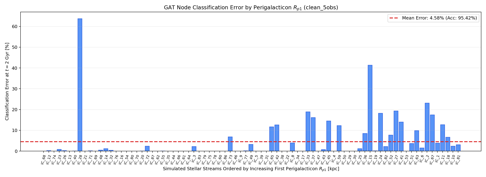
📉 Erreur de Classification par Péricentre R_p1 (GCN_clean_5obs)
clean_5obs/error_percentage_by_perigalacticon_GCN_clean_5obs.png
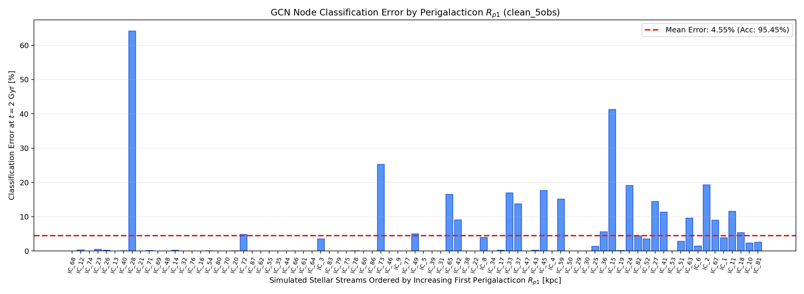
🪐 Évolution Orbitale R(t) & Fraction Liée (6 Panneaux)
clean_5obs/R_vs_t_6panels_rp1.png

🗺️ Distribution Galactocentrique des 81 Orbites (Seeds)
clean_5obs/seeds_positions_unbiased.png

🌐 Prédiction 3D Amas & Marées (GAT_ID11_output100_clean_5obs)
clean_5obs/prediction_GAT_ID11_output100_clean_5obs.png
🌐 Prédiction 3D Amas & Marées (GAT_ID1_output100_clean_5obs)
clean_5obs/prediction_GAT_ID1_output100_clean_5obs.png
🌐 Prédiction 3D Amas & Marées (GAT_ID53_output100_clean_5obs)
clean_5obs/prediction_GAT_ID53_output100_clean_5obs.png
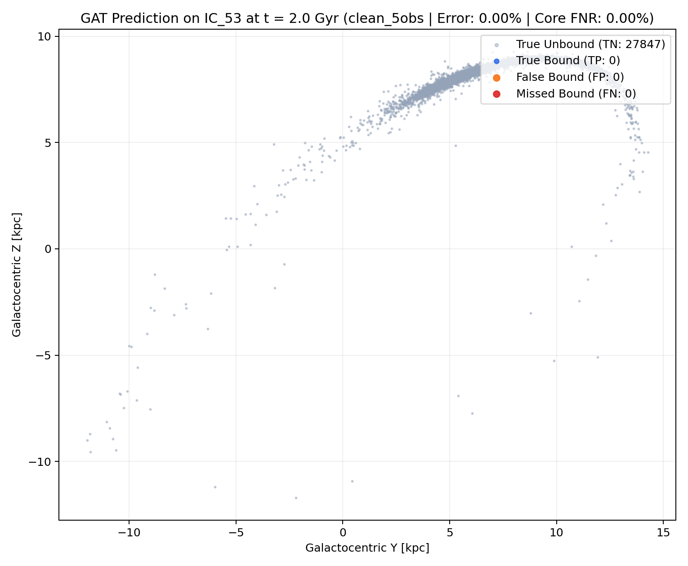
🌐 Prédiction 3D Amas & Marées (GAT_ID70_output100_clean_5obs)
clean_5obs/prediction_GAT_ID70_output100_clean_5obs.png
🌐 Prédiction 3D Amas & Marées (GAT_ID74_output100_clean_5obs)
clean_5obs/prediction_GAT_ID74_output100_clean_5obs.png
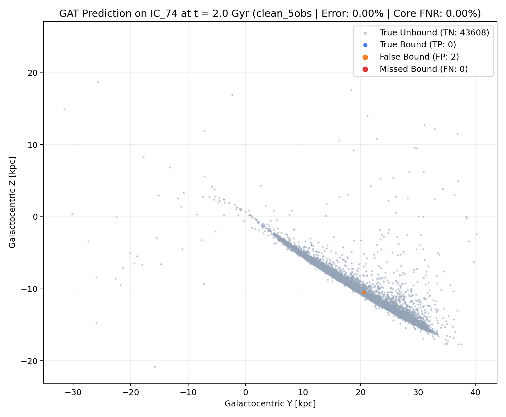
🌐 Prédiction 3D Amas & Marées (GAT_ID81_output100_clean_5obs)
clean_5obs/prediction_GAT_ID81_output100_clean_5obs.png
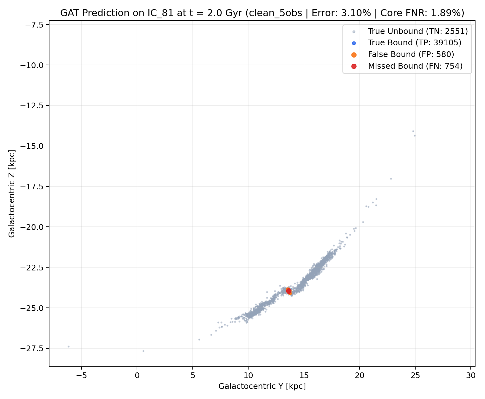
🌐 Prédiction 3D Amas & Marées (GCN_ID11_output100_clean_5obs)
clean_5obs/prediction_GCN_ID11_output100_clean_5obs.png
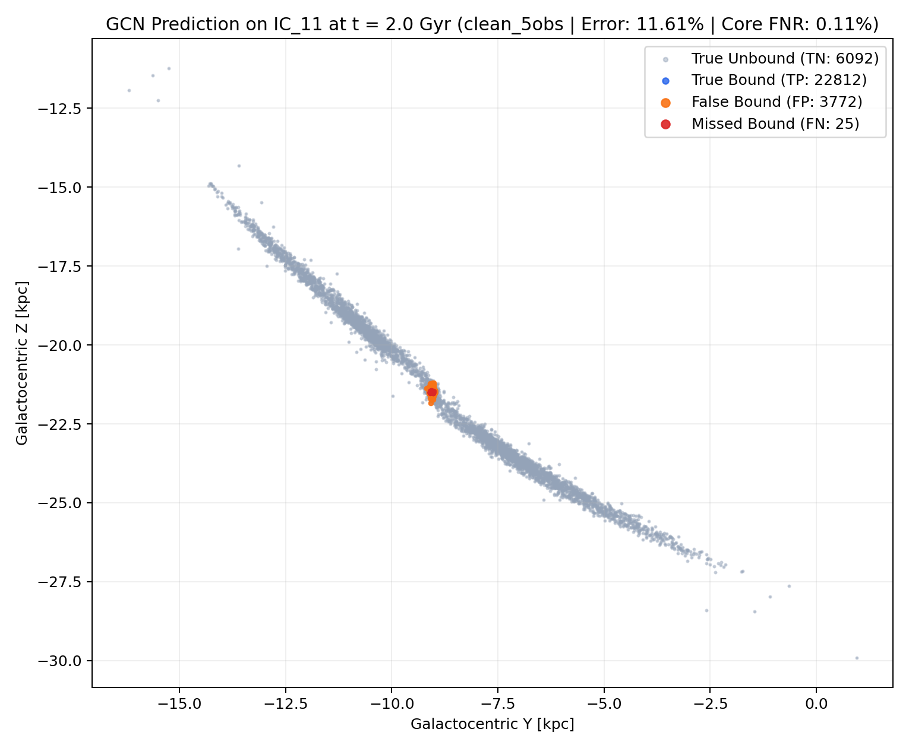
🌐 Prédiction 3D Amas & Marées (GCN_ID1_output100_clean_5obs)
clean_5obs/prediction_GCN_ID1_output100_clean_5obs.png
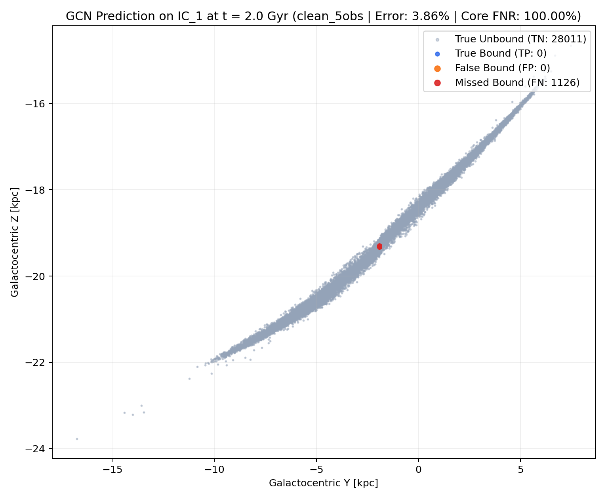
🌐 Prédiction 3D Amas & Marées (GCN_ID53_output100_clean_5obs)
clean_5obs/prediction_GCN_ID53_output100_clean_5obs.png
🌐 Prédiction 3D Amas & Marées (GCN_ID70_output100_clean_5obs)
clean_5obs/prediction_GCN_ID70_output100_clean_5obs.png
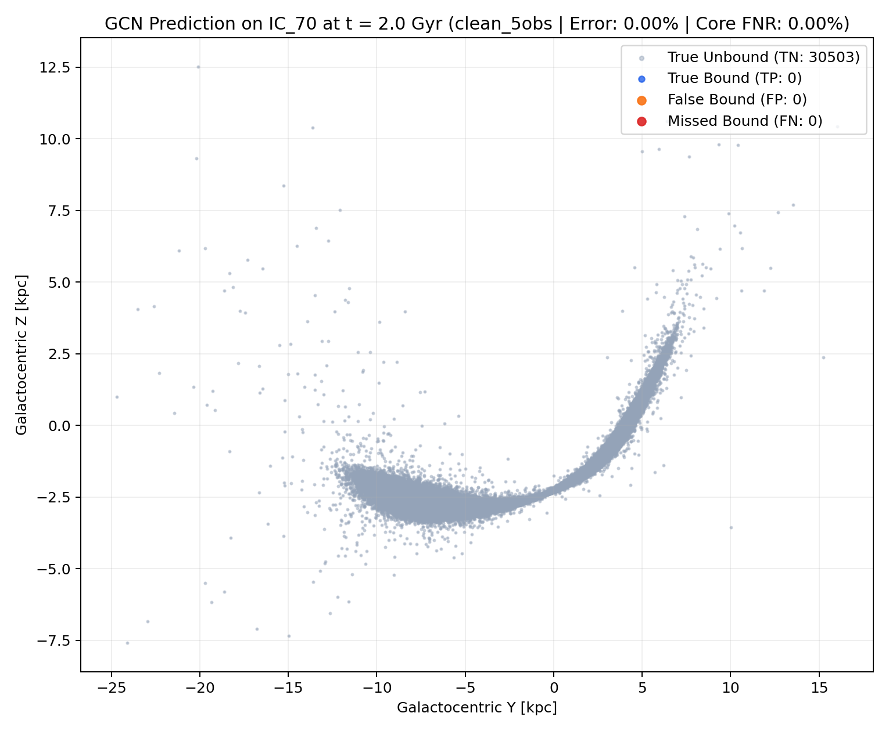
🟠 2. Modèle 5D Bruité Gaia DR3 (Curriculum Fine-Tuning) — noisy_5obs
Évaluation de la robustesse face aux incertitudes astrométriques dépendantes de la magnitude G (Gaia DR3).
Graphes Interactifs Plotly (Cliquer pour afficher dans le lecteur intégré ou ↗ pour plein écran)
Figures Scientifiques Haute Résolution (PNG)
📊 Spectre RMT à Bâtons / Candles (noisy_5obs)
noisy_5obs/spectral_analysis_GNN_noisy_5obs.png
📈 Courbes d'Entraînement Loss & Acc (noisy_5obs)
noisy_5obs/live_plots_GNN_noisy_5obs.png
🎯 Core FNR & Rappel par Péricentre R_p1 (GAT_noisy_5obs)
noisy_5obs/surviving_core_fnr_by_perigalacticon_GAT_noisy_5obs.png

📉 Erreur de Classification par Péricentre R_p1 (GAT_noisy_5obs)
noisy_5obs/error_percentage_by_perigalacticon_GAT_noisy_5obs.png

🪐 Évolution Orbitale R(t) & Fraction Liée (6 Panneaux)
noisy_5obs/R_vs_t_6panels_rp1.png

🗺️ Distribution Galactocentrique des 81 Orbites (Seeds)
noisy_5obs/seeds_positions_unbiased.png

🌐 Prédiction 3D Amas & Marées (GAT_ID11_output100_noisy_5obs)
noisy_5obs/prediction_GAT_ID11_output100_noisy_5obs.png

🌐 Prédiction 3D Amas & Marées (GAT_ID1_output100_noisy_5obs)
noisy_5obs/prediction_GAT_ID1_output100_noisy_5obs.png

🌐 Prédiction 3D Amas & Marées (GAT_ID53_output100_noisy_5obs)
noisy_5obs/prediction_GAT_ID53_output100_noisy_5obs.png

🌐 Prédiction 3D Amas & Marées (GAT_ID70_output100_noisy_5obs)
noisy_5obs/prediction_GAT_ID70_output100_noisy_5obs.png

🌐 Prédiction 3D Amas & Marées (GAT_ID74_output100_noisy_5obs)
noisy_5obs/prediction_GAT_ID74_output100_noisy_5obs.png

🌐 Prédiction 3D Amas & Marées (GAT_ID81_output100_noisy_5obs)
noisy_5obs/prediction_GAT_ID81_output100_noisy_5obs.png

🟣 Études d'Ablation 4D (Leave-One-Observable-Out)
Évaluation de l'importance physique de chaque observable astrométrique en retirant tour à tour α, δ, ϖ, μ_α*, μ_δ.
🟣 Ablation 4D : 4obs_no_RA_clean — 4obs_no_RA_clean
Leave-One-Observable-Out (Sans Ascension Droite (α / RA) — Indices [1,2,3,4]) — Transfert 5D→4D depuis best_gat_clean.pth (93.04%).
Graphes Interactifs Plotly (Cliquer pour afficher dans le lecteur intégré ou ↗ pour plein écran)
Figures Scientifiques Haute Résolution (PNG)
⏳ 🟣 Ablation 4D : 4obs_no_DEC_clean (4obs_no_DEC_clean)
Leave-One-Observable-Out (Sans Déclinaison (δ / Dec) — Indices [0,2,3,4]) — Transfert 5D→4D depuis best_gat_clean.pth (93.04%). — En file d'attente SLURM (Pending)
⏳ 🟣 Ablation 4D : 4obs_no_parallax_clean (4obs_no_parallax_clean)
Leave-One-Observable-Out (Sans Parallaxe (ϖ) — Indices [0,1,3,4]) — Transfert 5D→4D depuis best_gat_clean.pth (93.04%). — En file d'attente SLURM (Pending)
⏳ 🟣 Ablation 4D : 4obs_no_pmra_clean (4obs_no_pmra_clean)
Leave-One-Observable-Out (Sans Mouvement Propre μ_α* — Indices [0,1,2,4]) — Transfert 5D→4D depuis best_gat_clean.pth (93.04%). — En file d'attente SLURM (Pending)
⏳ 🟣 Ablation 4D : 4obs_no_pmdec_clean (4obs_no_pmdec_clean)
Leave-One-Observable-Out (Sans Mouvement Propre μ_δ — Indices [0,1,2,3]) — Transfert 5D→4D depuis best_gat_clean.pth (93.04%). — En file d'attente SLURM (Pending)
🔵 Study 2 V2 — Domaine Réel Gaia DR3 (En file d'attente SLURM : Jobs 41185009–41185012)
Cette section se remplira automatiquement dès le démarrage des jobs V2 (Génération covariances Gaia DR3, Graphes à échelle physique préservée, GAT/GCN 3 classes : Bound Core / Potential Escaper / Unbound).
💾 Registre des Poids Sauvegardés (.pth Checkpoints)
| Checkpoint | Taille | Dossier Expérience | Archive Centrale |
|---|---|---|---|
best_gat_4obs_no_RA_clean.pth | 357.9 KB | GNN-jed/trained_models/study2/4obs_no_RA_clean/best_gat_4obs_no_RA_clean.pth | GNN-jed/trained_models/study2/weights/best_gat_4obs_no_RA_clean.pth |
best_gat_clean.pth | 361.2 KB | GNN-jed/trained_models/study2/clean_5obs/best_gat_clean.pth | GNN-jed/trained_models/study2/weights/best_gat_clean.pth |
best_gcn_clean.pth | 120.0 KB | GNN-jed/trained_models/study2/clean_5obs/best_gcn_clean.pth | GNN-jed/trained_models/study2/weights/best_gcn_clean.pth |
best_gat_noisy.pth | 361.2 KB | GNN-jed/trained_models/study2/noisy_5obs/best_gat_noisy.pth | GNN-jed/trained_models/study2/weights/best_gat_noisy.pth |
🖥️ État du Pipeline & Queue SLURM sur Jed
[2026-11-14 18:46:40] Study 2 Pipeline Status on Jed - Step 1 (Plummer ICs): 81 / 81 ready - Step 2 (SWIFT Runs): 0 / 81 completed (101 snapshots) - Step 3 (Observables): Labels=0/81 | Clean=0/81 | GaiaNoisy=0/81 - Step 4 (5D Graphs): Clean=0/81 | GaiaNoisy=0/81 - Step 5/6 Live GNN Training Progress: * 4obs_no_RA_clean/training_metrics_gat_4obs_no_RA_clean.log: Ep 002 | Train 0.1752 (92.98%) | Val 0.2404 (90.04%, Best=90.04%) | CoreFNR: 15.56% (min=8.41%) | Test=In progress * clean_5obs/training_metrics_gat_clean.log: Ep 020 | Train 0.1006 (96.00%) | Val 0.1495 (94.10%, Best=94.21%) | CoreFNR: 6.64% (min=6.60%) | Test=93.04% * clean_5obs/training_metrics_gcn_clean.log: Ep 025 | Train 0.1136 (95.42%) | Val 0.1820 (92.33%, Best=92.33%) | Test=92.17% * noisy_5obs/training_metrics_gat_noisy.log: Ep 020 | Train 0.2683 (88.10%) | Val 0.4221 (81.26%, Best=81.76%) | CoreFNR: 23.60% (min=14.33%) | Test=84.91% * [IN FLIGHT] 4obs_no_RA_clean (GAT): Ep 003 | Batch 0020/0103 (19.4%) | Batch Loss 0.1068 | LR: 1.79e-04 | RAM: 1.6G - Saved Model Checkpoints (.pth): 4 mirrored in GNN-jed/trained_models/study2/weights/ SLURM Queue: Unable to query squeue: Command '['squeue', '-u', 'cozma', '-o', '%.14i %.10P %.22j %.4t %.10M %.6D %R']' timed out after 10 seconds